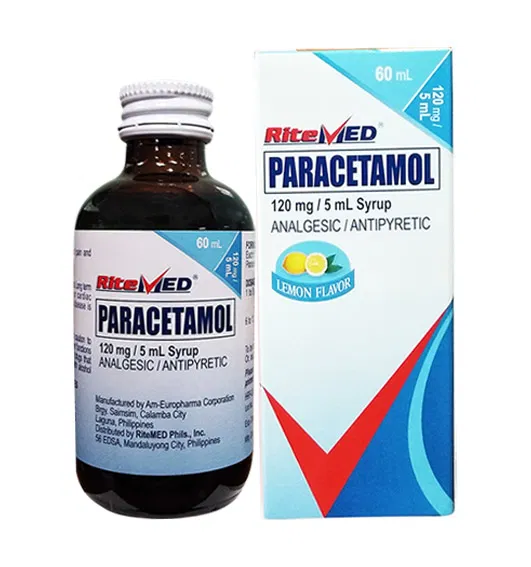

Phenylephrine is an effective nasal decongestant that provides temporary relief from nasal congestion due to colds, allergies, and sinus conditions. It works by narrowing blood vessels in the nasal passages, reducing swelling and congestion.
Description
Phenylephrine is a decongestant that belongs to a class of medications called sympathomimetic amines. It works by stimulating certain receptors in the blood vessels of the nasal passages, causing them to constrict (narrow). This reduces blood flow to the nasal passages, which decreases swelling and congestion.
Our Phenylephrine 10mg tablets provide effective relief from nasal congestion associated with the common cold, hay fever, upper respiratory allergies, and sinusitis. Unlike some other decongestants, phenylephrine is less likely to cause insomnia or increased blood pressure when used as directed.
Active Ingredient
Each tablet contains 10mg of Phenylephrine Hydrochloride.
Uses
Temporarily relieves nasal congestion due to:
Common cold
Hay fever
Upper respiratory allergies
Sinusitis
Helps clear sinus passages
Reduces swelling of nasal passages
Relieves sinus pressure
Promotes nasal and/or sinus drainage
How It Works
Phenylephrine works by:
Stimulating alpha-1 adrenergic receptors in blood vessels of the nasal mucosa
Causing vasoconstriction (narrowing) of blood vessels in the nasal passages
Reducing blood flow to the nasal mucous membranes
Decreasing nasal tissue swelling and congestion
Improving airflow through the nasal passages
Promoting drainage of sinus secretions
Dosage
Adults and children 12 years and over:
1 tablet (10mg) every 4 hours as needed
Do not take more than 6 tablets (60mg) in 24 hours
Take with a full glass of water
Do not use for more than 7 days unless directed by a doctor
Children 6 to under 12 years:
½ tablet (5mg) every 4 hours as needed
Do not give more than 6 doses (30mg) in 24 hours
Do not use for more than 5 days unless directed by a doctor
Children under 6 years:
Not recommended
Consult a doctor
Precautions
Do not use if you:
Are allergic to phenylephrine or any ingredients in this product
Have high blood pressure
Have heart disease
Have thyroid disease
Have diabetes
Have difficulty urinating due to enlargement of the prostate gland
Are taking prescription monoamine oxidase inhibitor (MAOI) drugs (certain drugs for depression, psychiatric or emotional conditions, or Parkinson's disease)
Ask a doctor before use if you have:
High blood pressure
Heart disease
Thyroid disease
Diabetes
Trouble urinating due to an enlarged prostate gland
Glaucoma
Ask a doctor or pharmacist before use if you are:
Taking any other drug
Taking sedatives or tranquilizers
Taking medications for high blood pressure or depression
Pregnant or breastfeeding
Stop use and ask a doctor if:
Nervousness, dizziness, or sleeplessness occurs
Symptoms do not improve within 7 days or are accompanied by fever
New symptoms occur
Redness or swelling is present
Possible Side Effects
When taken as directed, phenylephrine usually has minimal side effects. However, possible side effects may include:
Common side effects:
Nervousness
Restlessness
Excitability
Dizziness
Headache
Increased blood pressure
Nausea
Difficulty sleeping
Less common side effects:
Anxiety
Tremors
Weakness
Palpitations
Rapid heartbeat
Difficulty urinating
Rare but serious side effects (seek immediate medical attention):
Severe headache
Chest pain
Irregular or fast heartbeat
Shortness of breath
Confusion
Hallucinations
Seizures
Severe allergic reaction (rash, itching, swelling, severe dizziness, trouble breathing)
Storage
Store at room temperature (20-25°C or 68-77°F)
Keep away from moisture and heat
Keep the container tightly closed
Keep out of reach of children
Drug Interactions
Phenylephrine may interact with several medications. Always consult with a healthcare professional before taking phenylephrine if you are taking any of the following:
Monoamine oxidase inhibitors (MAOIs) - can cause dangerous increases in blood pressure
Beta-blockers (such as propranolol, metoprolol) - may reduce effectiveness of both medications
Other decongestants (including those in cold and allergy products)
Medications for high blood pressure
Tricyclic antidepressants
Digitalis/digoxin (heart medication)
Ergot alkaloids (used for migraines)
Thyroid medications
Additional Tips for Managing Nasal Congestion
In addition to taking phenylephrine as directed, these measures may help relieve nasal congestion:
Stay hydrated by drinking plenty of fluids
Use a humidifier or vaporizer to add moisture to the air
Use saline nasal sprays or rinses to moisturize nasal passages and clear mucus
Take hot showers or inhale steam from a bowl of hot water (carefully)
Apply warm compresses to your face to relieve sinus pressure
Elevate your head while sleeping to help drainage
Avoid known allergens that trigger congestion
Avoid smoking and secondhand smoke
When to Seek Medical Attention
While phenylephrine is generally safe when used as directed, certain situations require prompt medical attention:
If symptoms persist for more than 7 days or worsen
If you develop a high fever, severe headache, or rash
If you experience chest pain, rapid or irregular heartbeat, or difficulty breathing
If you have persistent nasal congestion without other cold symptoms
If you have green or yellow nasal discharge, which may indicate a bacterial infection
If you experience severe side effects after taking phenylephrine
Related Products

RM PARACETAMOL 120 MG / 5 ML SYRUP
Fever Relief, Pain Relief
Effective for reducing fever and relieving mild to moderate pain.
Temporarily relieves cough due to minor throat & bronchial irritation as may occur w/ a cold. Expectorant action to help loosen phlegm & thin bronchial secretions to make cough more productive. Helps relieve chest congestion.
The information provided on this website is for general informational purposes only and does not replace professional medical advice. Always consult with a healthcare professional before taking any medication, especially if you have existing health conditions or are taking other medications.